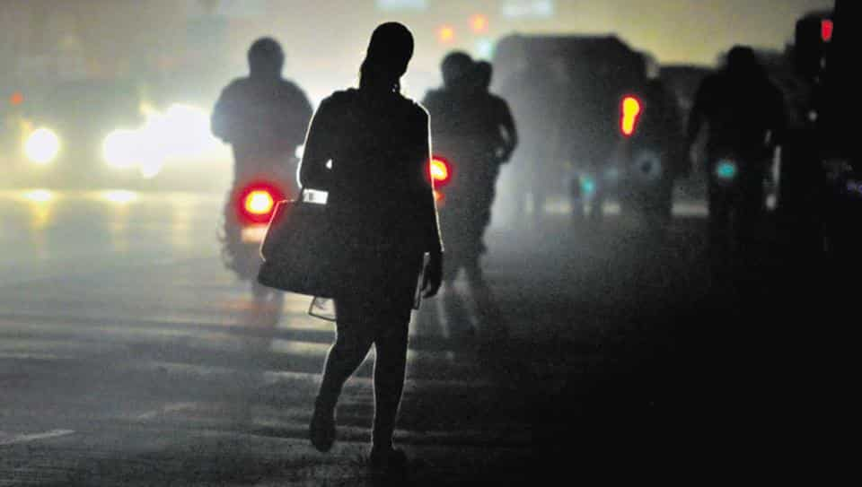
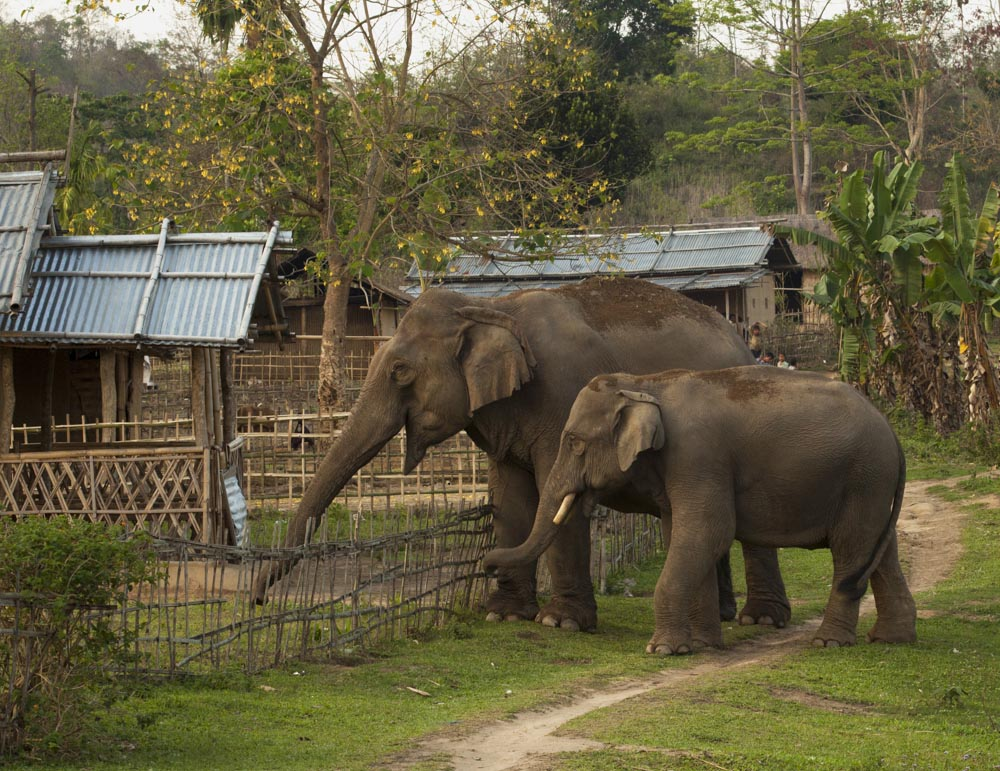

S O C I A L

1. To develop a cost effective system and efficient systems that recovers the energy lost in braking
Background: Generally when we apply brakes a huge amount of energy is lost due to frictional resistance between ground and the tyres. Challenge is to develop a system that can utilize this lost energy in order to charge a cell. It should be easily fitted to the vehicle so as to charge the cell. This cell should not primary cell. It should be an additional cell storing energy.
Requiremets:A working prototype.

2. Delay or inability of a woman in urban areas (Tier I/ II cities) to inform relevant persons in real time of a situation that results or is likely to result in an act of sexual abuse/ violence.
Background: Safety of Women from sexual assualt and other incidents of sexual violence is an unrelenting and increasingly frequent problem in modern Indian cities. Urban areas have opened up new employment opportunities for women which has also led to a increasing number of working women in urban areas; many of whom are new migrants to these cities and without local presence of family. Urban areas also see an increased interaction of women and men in workspaces, in transit (buses, trains, cabs, Uber, Ola etc.) and other public spaces; and during all times of the day and night.
When a women is in a situation where she is alone and vulnerable to incidents of sexual assault, it is important that she is able to inform her friends and family of the situation immediately, without any delay and on a real-time basis so that help can arrive quickly. The now ubiquitous smart-phone, although seemingly a woman's closest ally in such times still does not offer a comprehensive solution by which a woman in distress can relay SOS-type information to a pre-determined set of people effectively and in real-time with necessary details such as location and the details of the situation that she is in. This would help the relevant persons to effectively and quickly respond to the crisis.
Solutions Expected:

3. Solving human-elephant conflict
Background: Elephants die in India due to train collisions, threatening their survival. Elephant has been declared as the national heritage animal of India, which serves as an abode to Asiatic elephants. India’s economy is often referred to as the 'Elephant', implying a slow, yet powerful economy. Every year, a number of elephants sustain injuries and die in India after colliding with trains on railway tracks. No mitigation solution has yet been shown to be effective and the whole population is now considered threatened. India has the largest wild population of the Asian elephants— around 28,000 in number. A report by the Elephant Task force, commissioned by the Indian Ministry of Environment, revealed that 150 elephants were recently crushed to death by speeding trains and this number is increasing everyday. Railway lines and other linear infrastructure projects run through the forests for thousands of kilometers affecting wildlife corridors. This causes the fragmentation of their habitat. Animals cross the tracks to reach nearby water bodies, or in search of food, and sometimes end up getting trapped. The steep embankments alongside the tracks make it even more difficult for the bulky and slowmoving animal to escape when a train approaches. It has also been reported that the frequency of accidents increased when tracks were converted from narrow gauge to standard gauge, allowing high speed trains to run. Not only due to trains, but elephants and other animals get involved in various other human-animal conflict. Ultimately the animals fall for prey to humans’ actions in all the instances from the past.
Solutions Expected: